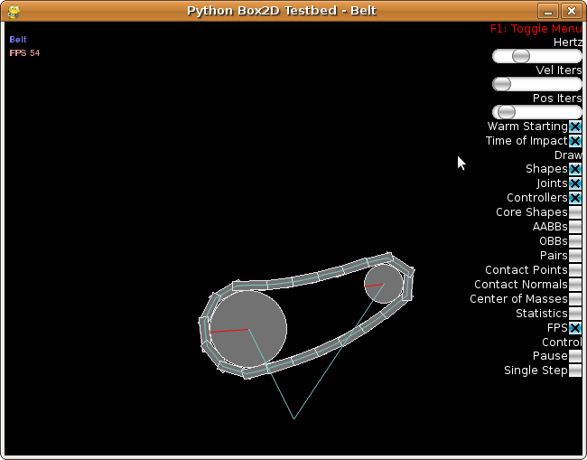

The Testbed¶
Once you have conquered the HelloWorld example, you should start looking at pybox2d’s testbed. The testbed is a unit-testing framework and demo environment. Here are some of the features:
NOTE
Most of these features are on the TODO list for the conversion to Cython. (sorry)
- Camera with pan and zoom.
- Mouse picking of shapes attached to dynamic bodies.
- Extensible set of tests.
- GUI for selecting tests, parameter tuning, and debug drawing options.
- Pause and single step simulation.
- Text rendering.
The testbed has many examples of pybox2d usage in the test cases and the framework itself. I encourage you to explore and tinker with the testbed as you learn pybox2d.

Drawing¶
Debug Drawing¶
b2Draw¶
You can implement the b2Draw class to get detailed drawing of the physics world. Here are the available entities:
- shape outlines
- joint connectivity
- core shapes (for continuous collision)
- broad-phase axis-aligned bounding boxes (AABBs), including the world AABB
- polygon oriented bounding boxes (OBBs)
- broad-phase pairs (potential contacts)
- center of mass
The pygame testbed draws physics entities using the debug draw facility and the contact listener, so it serves as the primary example of how to implement debug drawing as well as how to draw contact points.
To use b2Draw, you must subclass it, much as in the destruction listener. If you want everything to be drawn properly, all of the following callback functions should be implemented.
class MyDraw(b2Draw):
"""
This debug draw class accepts callbacks from Box2D (which specifies what to draw)
and handles all of the rendering.
If you are writing your own game, you likely will not want to use debug drawing.
Debug drawing, as its name implies, is for debugging.
"""
def __init__(self, **kwargs):
b2DrawExtended.__init__(self, **kwargs)
def StartDraw(self):
""" Called when drawing starts. """
def EndDraw(self):
""" Called when drawing ends. """
def DrawPoint(self, p, size, color):
""" Draw a single point at point p given a pixel size and color. """
def DrawAABB(self, aabb, color):
""" Draw a wireframe around the AABB with the given color. """
def DrawSegment(self, p1, p2, color):
""" Draw the line segment from p1-p2 with the specified color. """
def DrawTransform(self, xf):
""" Draw the transform xf on the screen """
def DrawCircle(self, center, radius, color, drawwidth=1):
""" Draw a wireframe circle given the center, radius, axis of orientation and color. """
def DrawSolidCircle(self, center, radius, axis, color):
""" Draw a solid circle given the center, radius, axis of orientation and color. """
def DrawPolygon(self, vertices, color):
""" Draw a wireframe polygon given the screen vertices (tuples) with the specified color. """
def DrawSolidPolygon(self, vertices, color):
""" Draw a filled polygon given the screen vertices (tuples) with the specified color. """
and to use it:
draw = MyDraw()
world = World()
world.renderer = draw
b2DrawExtended and Coordinate System Conversions¶
Since pygame does not offer automatic world to screen coordinate transformations (or vice-versa), a simple class was implemented to do these transformations in the underlying C++ library to increase the performance on the order of 10%. By default, the pygame backend uses this class. These conversions are also detailed in the Python code:
def to_screen(self, point):
"""
Convert from world to screen coordinates.
In the class instance, we store a zoom factor, an offset indicating where
the view extents start at, and the screen size (in pixels).
"""
x = (point.x * self.zoom)-self.offset.x
if self.flipX:
x = self.screenSize.x-x
y = (point.y * self.zoom)-self.offset.y
if self.flipY:
y = self.screenSize.y-y
return (x, y)
Picking objects via the mouse (or converting from screen to world coordinates) is first done by the conversion in the FrameworkBase.ConvertScreenToWorld:
def ConvertScreenToWorld(self, x, y):
"""
Returns a b2Vec2 indicating the world coordinates of screen (x,y)
"""
return b2Vec2((x + self.viewOffset.x) / self.viewZoom,
((self.screenSize.y - y + self.viewOffset.y) / self.viewZoom))
Note: The calling convention and naming is different (sorry).
Different Backends¶
This debug drawing, unlike in the standard Box2D distribution, is provided by different backends. These backends depend on other Python libraries.
For the current master branch of pybox2d (as of yet unreleased), you can run the examples by using:
$ cd pybox2d
$ python -m examples.web --backend=pygame
$ python -m examples.web --backend=pyglet
$ python -m examples.web --backend=pyqt4
$ python -m examples.web --backend=opencv
The pygame backend is used by default if none is specified. To see other command-line
based options, use --help.
For older versions of pybox2d, you can run the examples by using:
$ cd pybox2d/examples
$ python test_Web.py --backend=pygame
$ python test_Web.py --backend=pyglet
$ python test_Web.py --backend=pyqt4
$ python test_Web.py --backend=opencv
These backends have library-specific code in their respective x_framework.py. They are defined as children of the main FrameworkBase class, defined in framework.py. Further, when a testbed example is loaded, it is based on the ‘Framework’ class. This is so that the test examples can be derived from the different backends without knowing the name of their own superclass.
To implement your own framework, first look at the bottom of framework.py. Then, basing it off of the currently available frameworks would be advisable. At the very least, they must have the same structure and the functions listed as necessary implemented.
Drawing Without b2Draw¶
The pyqt4 backend gives an example of how to iterate through the bodies, joints, and so on in a world. The basic outline is given here, but for further information, please see the qt4 framework
def DrawShape(shape, transform, color, selected=False):
"""
Draw any type of shape.
To get rid of these isinstance checks, it's possible to
monkey patch each b2Shape to have a specific rendering
function. It's probably more Pythonic that way. Same deal
with the joints.
"""
if isinstance(shape, PolygonShape):
DrawPolygonShape(shape, transform, color)
elif isinstance(shape, b2EdgeShape):
v1 = b2Mul(transform, shape.vertex1)
v2 = b2Mul(transform, shape.vertex2)
DrawSegment(v1, v2, color)
elif isinstance(shape, b2CircleShape):
DrawCircleShape(shape, transform, color)
elif isinstance(shape, b2LoopShape):
vertices = shape.vertices
v1 = b2Mul(transform, vertices[-1])
for v2 in vertices:
v2 = b2Mul(transform, v2)
DrawSegment(v1, v2, color)
v1 = v2
def DrawJoint(joint):
"""
Draw any type of joint.
"""
bodyA, bodyB = joint.bodyA, joint.bodyB
xf1, xf2 = bodyA.transform, bodyB.transform
x1, x2 = xf1.position, xf2.position
p1, p2 = joint.anchorA, joint.anchorB
color = b2Color(0.5, 0.8, 0.8)
if isinstance(joint, b2DistanceJoint):
DrawSegment(p1, p2, color)
elif isinstance(joint, b2PulleyJoint):
s1, s2 = joint.groundAnchorA, joint.groundAnchorB
DrawSegment(s1, p1, color)
DrawSegment(s2, p2, color)
DrawSegment(s1, s2, color)
elif isinstance(joint, b2MouseJoint):
pass # don't draw it here
else:
DrawSegment(x1, p1, color)
DrawSegment(p1, p2, color)
DrawSegment(x2, p2, color)
def ManualDraw():
"""
This implements code normally present in the C++ version,
which calls the callbacks that you see in this class (DrawSegment,
DrawSolidCircle, etc.).
This is implemented in Python as an example of how to do it, and also
a test.
"""
colors = {
'active' : b2Color(0.5, 0.5, 0.3),
'static' : b2Color(0.5, 0.9, 0.5),
'kinematic' : b2Color(0.5, 0.5, 0.9),
'asleep' : b2Color(0.6, 0.6, 0.6),
'default' : b2Color(0.9, 0.7, 0.7),
}
if settings.drawShapes:
for body in world.bodies:
transform = body.transform
for fixture in body.fixtures:
shape = fixture.shape
if not body.active: color=colors['active']
elif body.type==b2_staticBody: color=colors['static']
elif body.type==b2_kinematicBody: color=colors['kinematic']
elif not body.awake: color=colors['asleep']
else: color=colors['default']
DrawShape(fixture.shape, transform, color, (sel_shape==shape))
if settings.drawJoints:
for joint in world.joints:
DrawJoint(joint)
if settings.drawAABBs:
color = b2Color(0.9, 0.3, 0.9)
cm = world.contactManager
for body in world.bodies:
if not body.active:
continue
transform = body.transform
for fixture in body.fixtures:
shape = fixture.shape
for childIndex in range(shape.childCount):
DrawAABB(shape.getAABB(transform, childIndex), color)